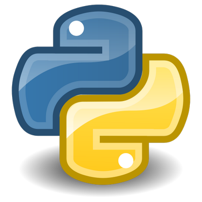

class: center, middle # Scaling Flask with Kubernetes <img src="images/kubernetes-logo.png" alt="kubernetes logo" style="width:20%;"> <br> <div> <span style="vertical-align:60%;">Presented by <em>Michael Herman</em> at <a href="https://www.boulderpython.org/">Boulder Python</a></span>  </div> --- ### Agenda -- ##### (1) Intro 1. About Me 1. Objectives -- ##### (2) Theory 1. Container Orchestration 1. Kubernetes Concepts -- ##### (3) Practice 1. App Overview 1. Minikube 1. Google Cloud Platform (GCP) 1. GCP Deployment -- ##### (4) Next Steps --- class: center, middle ## Intro --- ### About Michael ``` $ whoami michael.herman ``` <p style="margin:0"><img src="images/me.png" style="max-width: 10%;" alt="me"></p> -- #### Day Job Software Engineer at [ClickFox](https://www.clickfox.com/). <img src="images/clickfox.png" style="max-width: 4%; border:0; box-shadow: none;" alt="clickfox logo"> -- #### Also 1. Co-founder/author of [Real Python](https://realpython.com) 1. 😍 - [tech writing/education](http://mherman.org), [open source](http://github.com/mjhea0), [financial models](http://www.starterfinancialmodel.com/), [radiohead](http://radiohead.com/) <a href="https://testdriven.io"> <img src="images/mobile_image.png" style="max-width: 20%; padding-top:10px; box-shadow: none;" alt="testdriven.io"> </a> --- ### Objectives By the end of this talk, you should be able to... -- 1. Explain what container orchestration is and why you may need to use an orchestration tool 1. Discuss the pros and cons of using Kubernetes over other orchestration tools like Docker Swarm and Elastic Container Service (ECS) 1. Spin up a Flask-based microservice locally with Docker Compose 1. Build Docker images and push them up to the Docker Hub image registry 1. Provision hosts on Digital Ocean with Docker Machine 1. Configure a Docker Swarm cluster to run on Digital Ocean 1. Run Flask, Nginx, and Postgres on Docker Swarm 1. Use a round robin algorithm to route traffic on a Swarm cluster 1. Monitor a Swarm cluster with Docker Swarm Visualizer 1. Use Docker Secrets to manage sensitive information within Docker Swarm 1. Configure health checks to check the status of a service before it's added to a cluster 1. Access the logs of a service running on a Swarm cluster --- class: center, middle ## Theory --- ### What is Container Orchestration? -- As you move from deploying containers on a single machine to deploying them across a number of machines, you'll need an orchestration tool to manage (and automate) the arrangement, coordination, and availability of the containers across the entire system. -- **Issues:** 1. Cross-server container communication 1. Horizontal scaling 1. Service discovery 1. Security/TLS 1. Zero-downtime deploys 1. Rollbacks -- <br> This is where [Kubernetes](https://kubernetes.io/) fits in along with a number of other orchestration tools - like [Docker Swarm](https://docs.docker.com/engine/swarm/), [ECS](https://aws.amazon.com/ecs/), [Mesos](http://mesos.apache.org/), and [Nomad](https://www.nomadproject.io/). --- ### What is Container Orchestration? (continued...) -- **Which orchestration tool should you use?** -- - use *Kubernetes* if you need to manage large, complex clusters - use *Docker Swarm* if you are just getting started and/or need to manage small to medium-sized clusters - use *ECS* if you're already using a number of AWS services -- | Tool | Pros | Cons | |--------------|-----------------------------------------------|------------------------------------| | Kubernetes | large community, flexible, most features, hip | complex setup, high learning curve | | Docker Swarm | easy to set up, perfect for smaller clusters | limited by the Docker API | | ECS | fully-managed service, integrated with AWS | vendor lock-in | -- There's also a number of managed Kubernetes services on the market. Do you want to focus on managing a Kubernetes cluster or on deploying your apps to production? -- <small><em>For more, review [Choosing the Right Containerization and Cluster Management Tool](https://blog.kublr.com/choosing-the-right-containerization-and-cluster-management-tool-fdfcec5700df).</em></small> --- ### Orchestration Feature Wish-list -- <table style="width:100%;"> <thead> <tr> <th>Feature</th> <th>Info</th> </tr> </thead> <tbody> <tr> <td>Health checks</td> <td>Verify when a task is ready to accept traffic</td> </tr> <tr> <td>Dynamic port-mapping</td> <td>Ports are assigned dynamically when a new container is spun up</td> </tr> <tr> <td>Zero-downtime deployments</td> <td>Deployments do not disrupt end users</td> </tr> <tr> <td>Service discovery</td> <td>Automatic detection of new containers and services</td> </tr> <tr> <td>Auto scaling</td> <td>Automatically scale resources up or down based on the load</td> </tr> <tr> <td>Provisioning</td> <td>New containers should select hosts based on resources and configuration</td> </tr> </tbody> </table> -- **What else?** -- Load balancing, logging, monitoring, authentication and authorization, security... *predictability*, *scalability*, and *high availability*... --- ### Kubernetes Concepts -- The primitives: 1. Node 1. Pod 1. Service 1. Label 1. Deployments 1. Ingress <small><em>Source: [Kubernetes 101: Pods, Nodes, Containers, and Clusters](https://medium.com/google-cloud/kubernetes-101-pods-nodes-containers-and-clusters-c1509e409e16)</em></small> <br><br> <img src="images/kubernetes-logo-2.png" alt="kubernetes logo" style="width:30%;"> --- ### Kubernetes Concepts (continued...) -- **Nodes** A [Node](https://kubernetes.io/docs/concepts/architecture/nodes/) is a worker machine provisioned to run Kubernetes. Each Node is managed by the Kubernetes master. -- **Pods** A [Pod](https://kubernetes.io/docs/concepts/workloads/pods/pod/) is a logical, tightly-coupled group of application containers that run on a Node. Containers in a Pod are deployed together and share resources (like data volumes and network addresses). Multiple Pods can run on a single Node. -- <p style="margin-top:-20px"> <img src="images/node-pod.svg" alt="kubernetes node and pod" style="width:45%;"> </p> --- ### Kubernetes Concepts (continued...) -- **Service** A [Service](https://kubernetes.io/docs/concepts/services-networking/service/) is a logical set of Pods that perform a similar function. It enables load balancing and service discovery. It's an abstraction layer over the Pods; Pods are meant to be ephemeral while services are much more persistent. -- **Deployments** [Deployments](https://kubernetes.io/docs/concepts/workloads/controllers/deployment/) are used to describe (via config file) the desired state of Kubernetes. They dictate how Pods are created, deployed, and replicated. -- <p style="margin-top:-25px"> <img src="images/service-deployment.svg" alt="kubernetes service and deployment" style="width:42%;"> </p> --- ### Kubernetes Concepts (continued...) -- **Label** [Labels](https://kubernetes.io/docs/concepts/overview/working-with-objects/labels/) are key/value pairs that are attached to resources (like pods) which are used to organize related resources. You can think of them like CSS selectors. 1. Environment - `dev`, `test`, `prod` 1. App version - `beta`, `1.2.1` 1. Type - `client`, `server`, `db` -- **Ingress** [Ingress](https://kubernetes.io/docs/concepts/services-networking/ingress/) is a set of routing rules used to control the external access to Services based on the request host or path. -- <p style="margin-bottom:0;margin-top:-10px"> <img src="images/ingress.png" alt="kubernetes ingress" style="width:40%;"> </p> <p style="margin:0"> <small><em>Image source: <a href="https://medium.com/google-cloud/kubernetes-nodeport-vs-loadbalancer-vs-ingress-when-should-i-use-what-922f010849e0">Kubernetes NodePort vs LoadBalancer vs Ingress? When should I use what?</a></em></small> </p> --- class: center, middle ## Practice --- ### App Overview -- vue + flask + postgres --- ### Minikube -- 1. What is it? 1. Set up 1. Running the app locally https://github.com/kubernetes/minikube/blob/master/docs/drivers.md#hyperkit-driver kubectl create -f postgres-deployment.yaml kubectl create -f postgres-service.yaml kubectl exec postgres-POD_IDENTIFIER --stdin --tty -- createdb -U postgres books kubectl create -f flask-deployment.yaml kubectl expose deployment flask --type=NodePort --port 5000 minikube service flask --url kubectl create -f vue-deployment.yaml kubectl expose deployment vue --type=NodePort --port 8080 minikube service vue --url minikube addons enable ingress --- ### Google Cloud Platform (GCP) -- 1. Google Cloud SDK 1. Kubernetes Engine 1. Container Registry 1. Cloud Storage --- ### GCP Deployment -- 1. Kubectl 1. Helm 1. Postgres 1. Flask 1. Ingress --- ### That's it! What's next? -- ##### What has not been covered? 1. Leases and revocation 1. Setting up new policies 1. Deployment 1. Configuring TLS 1. High availability -- ##### Resources 1. Full blog post - https://testdriven.io/managing-secrets-with-vault-and-consul 1. Slides - http://mherman.org/presentations/vault 1. Repo - https://github.com/testdrivenio/vault-docker-example 1. Why We Need Dynamic Secrets - https://www.hashicorp.com/blog/why-we-need-dynamic-secrets (advantages of using dynamic secrets) -- ##### Questions? ✌️